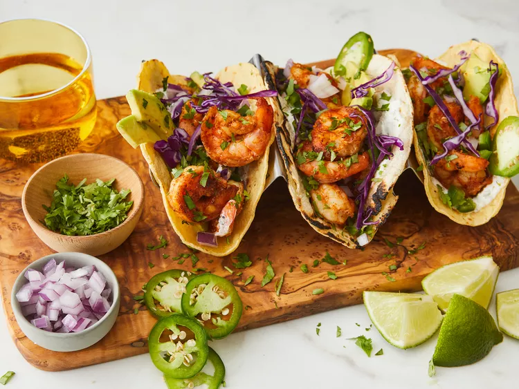

Shrimp Tacos with Cilantro-Lime Crema

Prep Time:45 mins
Cook Time:30 mins
Total Time:1 hr 15 mins
Servings:20
Yield:20 tacos
Ingredients
- 2 pounds large frozen peeled and deveined shrimp, thawed
- 1 ½ teaspoons chili powder
- 1 teaspoon freshly minced garlic
- ½ teaspoon paprika
- ½ teaspoon ground cumin
- ½ teaspoon onion powder
- ½ teaspoon salt
- ½ teaspoon ground black pepper
- ¼ teaspoon ground coriander
Directions
- Rinse defrosted shrimp under cold water, drain, and pat dry.
- Combine shrimp, chili powder, garlic, paprika, cumin, onion powder, 1/2 teaspoon salt, 1/2 teaspoon black pepper, coriander, and orange zest in a bowl. Mix well.
Overhead of shrimp being mixed with a chili powder mixture in a bowl.
- Heat olive oil in nonstick frying pan over medium-high heat. Add shrimp and cook until bright pink on the outside and the meat is opaque, 4 to 5 minutes on each side, depending on the size of the shrimp.
Overhead of seasoned shrimp being cooked in a skillet.
- While shrimp cooks, prepare crema by whisking together sour cream, zest and juice of 1 lime, 1 teaspoon cilantro, garlic powder, and 1 pinch each of salt and black pepper.
Overhead of a mixed crema with three lime wedges off to the side.
- Heat corn tortillas in either a pan or on a griddle over low heat, 1 to 2 minutes per side. Be careful not to let them burn. Set aside.
- Assemble tacos by spreading 1 teaspoon crema across each tortilla, adding 3 or 4 shrimp, 2 slices of avocado, a sprinkle of fresh red onion, cilantro, and jalapeño. Serve with sliced limes to squeeze on top and extra crema on the side.
Overhead of tortillas being filled with shrimp, crema, and cilantro with a bowl of crema off to the side.